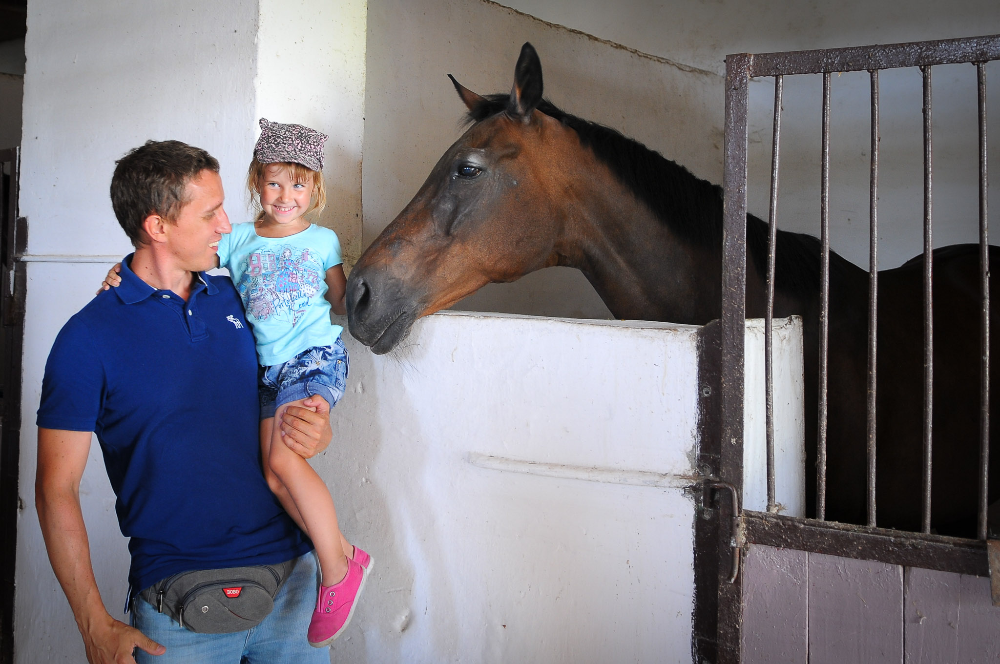

С годами как-то всё меньше получаешь удовольствие от покупок. Удовольствие не в плане «наконец-то у меня есть зимняя обувь», а в плане «вау». Точнее, не с годами, конечно, а с покупками. Но в общем случае эти понятия можно приравнять.

Один мой товарищ не так давно всё-таки купил хорошую машину. Сделал качественный шаг от бюджетного седана к японскому чёрному миниджипу. Писает кружочками теперь, и я его понимаю. Сказал ему сегодня, чтобы наслаждался этим чувством подольше. Такого в жизни больше может и не быть.
Каждое «вау» поднимает планку для следующего «вау» в геометрической прогрессии. Поэтому не стоит завидовать людям, у которых в 20 лет уже есть подаренный родителями набор из квартиры-машины, например. У вас это может случиться в будущем, а у них уже нет.
В салонах, где продают машины за 5 миллионов редко встретишь покупателя с широко открытыми глазами.